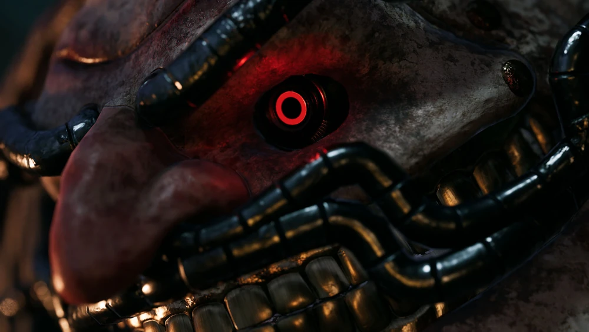

The First Puppert Nightmare
The Parade Master is the first major boss encountered in Krat. Once created to entertain the city's citizens, this gigantic puppet became a terrifying monster after the puppet frenzy.
Brutal and unpredictable, the Parade Master introduces players to the dark and violent world of Lies of P.
Type: Puppet
Weakness: Electric Blitz
Location: Krat Central Station